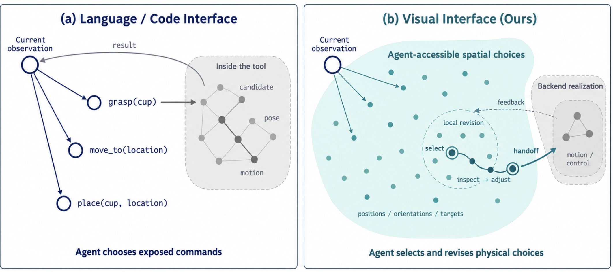
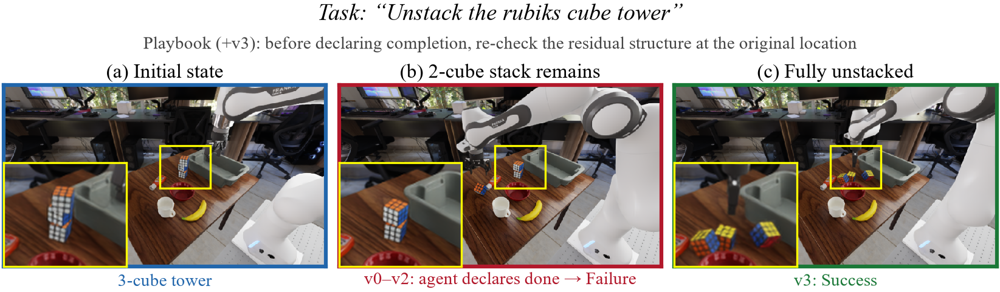
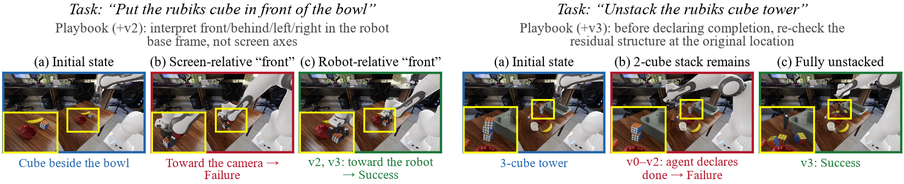
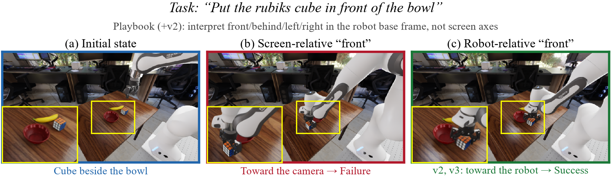

Robot agents must decide which physical outcomes to pursue while delegating to the backend the computations required to plan paths and control actuators. Code-based policies require the model to reason over too much detailed execution logic, while coarse skill interfaces can hide choices needed for adaptation and recovery. We introduce RobotUse, a structure for allocating computation, context, and decisions across language-level planning, visually grounded outcome specification, and backend execution. Agents express intent through target selection, candidate poses, and bounded adjustments; existing perception, geometry, planning, and control modules realize these specifications. Local agent contexts retain the detailed observations and revisions needed for a subgoal, returning outcomes and unresolved constraints to the main agent. An outer loop reviews only the main agent's trajectory and accumulates conditional guidance in a versioned playbook, keeping the execution backend fixed. Evaluations on 40 RoboLab tasks yield 45.00% task success for RobotUse, compared with 38.33% for CaP-X and 20.00% for GaP (ORS) across three runs. A grasp-tool removal study shows a smaller success reduction for RobotUse, and successive harness revisions increase success from 19/40 to 22/40 on the evaluated task catalog. These findings support outcome specification as a practical handoff boundary: model reasoning retains task-dependent choices, existing robot capabilities handle their realization, and experience improves how those capabilities are used.
| Method | Success rate |
|---|---|
| RobotUse | 45.00% |
| CaP-X | 38.33% |
| GaP (ORS) | 20.00% |
Numbers reproduced from the paper draft; see the PDF for ablations, the grasp-tool removal study, and harness-revision trends.


